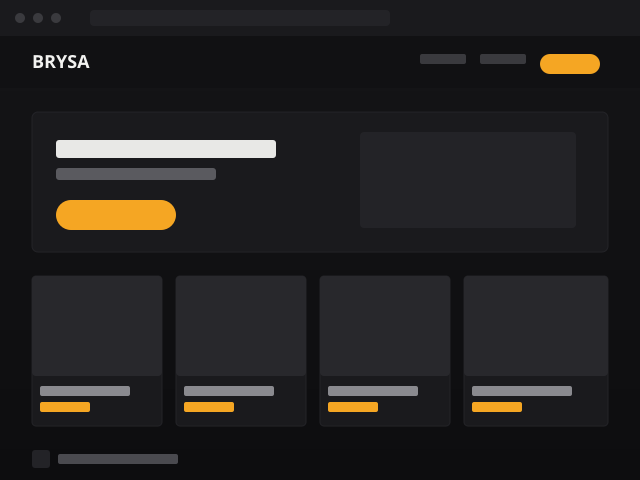

01 — E-commerce
BRYSA
Loja virtual para uma marca de roupas fitness femininas, com autenticação de usuários, carrinho de compras, checkout e um painel administrativo para gerenciamento de produtos e pedidos.
- Python
- Flask
- HTML
- CSS
- JavaScript
- SQLite
* Links de "Ver projeto" e "GitHub" são placeholders — substitua pelas URLs reais.